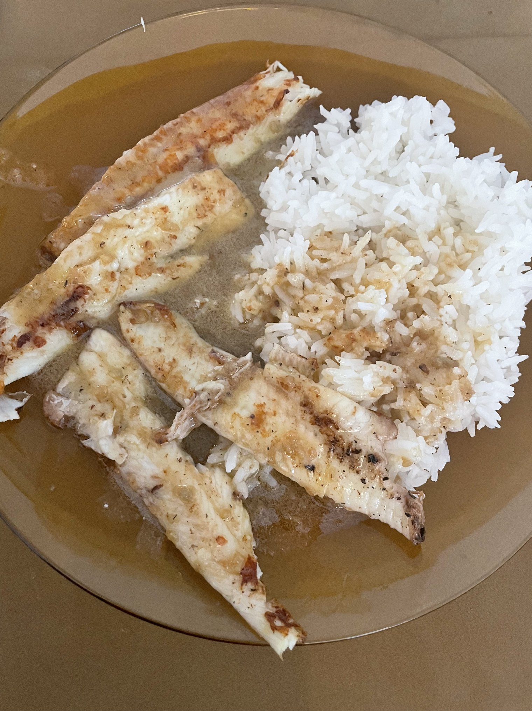
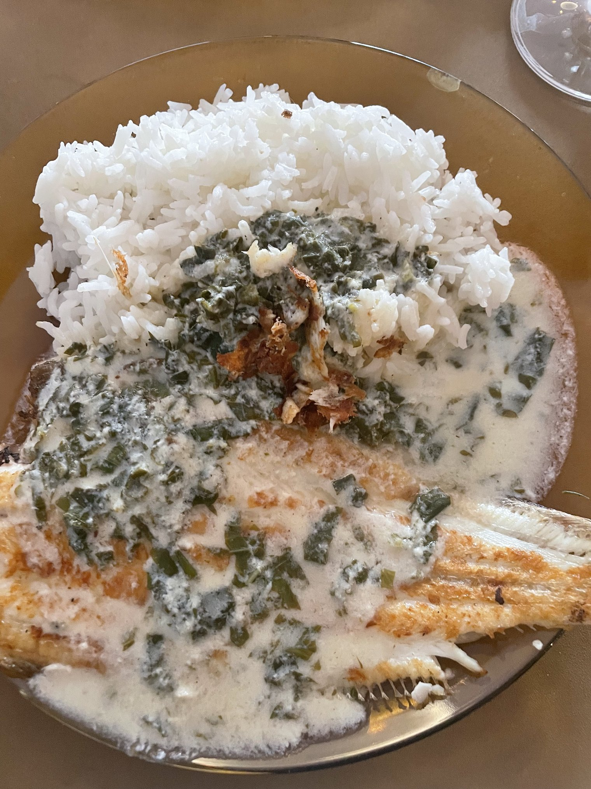

Lenguado con arroz (salsa beurre blanc o crema vegana con limón y albahaca)
Ingredientes
2×
- 150 g de arroz
- 2 lenguados
- mantequilla
- 1 chalota
- 50 ml de vino blanco
- 80 g de mantequilla fría
- 150 ml de crema de leche vegana
- el zumo de 1/2 limón
- albahaca

Preparación
Paso 1
Cocer 150 g de arroz en agua con sal.
Paso 2
Salpimentar 2 lenguados (o filetes) y dorarlos en la sartén con un poco de mantequilla 2-3min por cada lado.
Paso 3
Salsa beurre blanc: reducir 1 chalota picada con 50 ml de vino blanco, y añadir poco a poco 80 g de mantequilla fría en dados, batiendo, hasta que quede una salsa ligada.
Paso 4
Variante vegana: calentar 150 ml de crema de leche vegana con el zumo de 1/2 limón y albahaca picada.
Paso 5
Servir el lenguado con el arroz y la salsa por encima.
